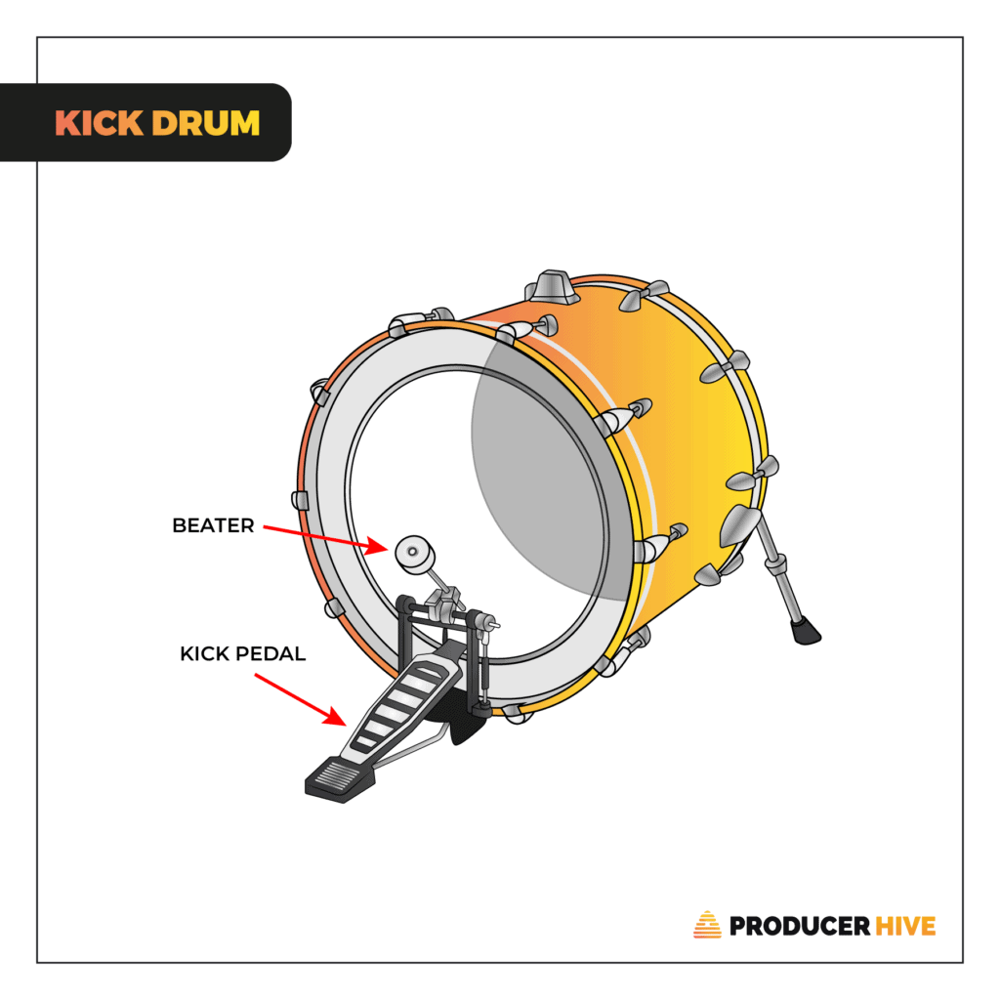
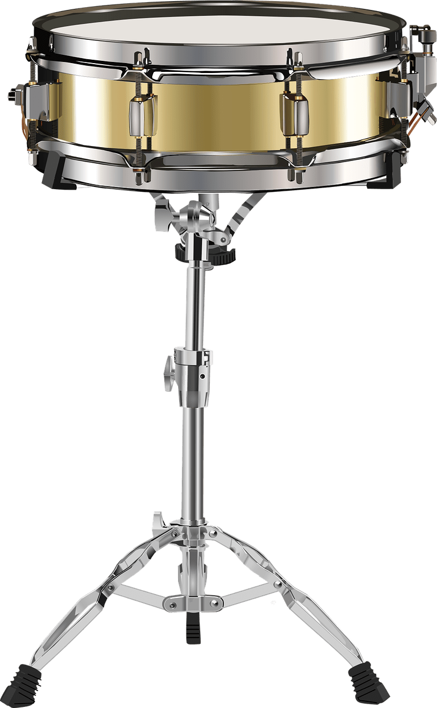
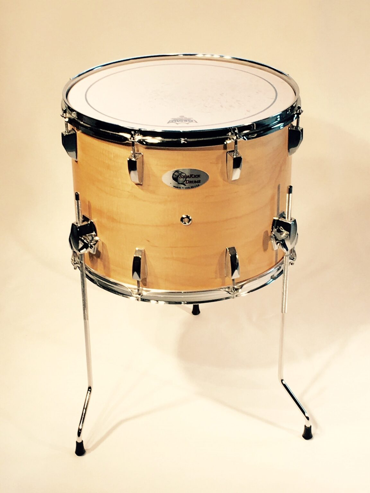
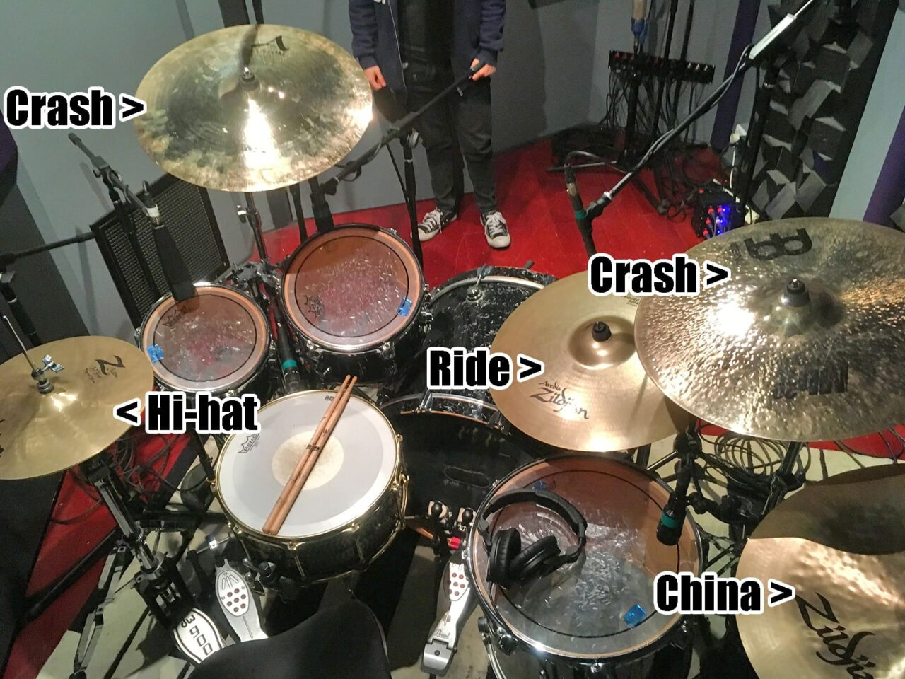

乐器介绍
这些乐器共同构成了 Beat 音轨。每种乐器承担不同的节奏角色，把它们按照拍点组合起来，就能形成完整的节奏模式。
Kick（底鼓）
Kick 是鼓组中最厚重、最低沉的声音，通常负责强调每小节的根基和主要重拍，让节奏听起来更稳定、更有推动力。

Snare（军鼓）
Snare 的声音清脆、有明显的击打感，常用于强调第二拍和第四拍，是流行、摇滚和电子音乐中常见的节奏骨架。

Tom（通鼓）
Tom 的音高通常介于底鼓和军鼓之间，不同尺寸的 Tom 能产生不同音高，常用于填充、过门和连接段落。


Open-Hat（开镲）
Open-Hat 是打开镲片后的明亮延音，声音比闭镲更长，常用来制造开放感、连接不同节拍或推动段落变化。
Closed-Hat（闭镲）
Closed-Hat 是镲片闭合时产生的短促声音，适合连续演奏八分音符或十六分音符，用来维持稳定而细密的律动。
Crash（碎音镲）
Crash 的声音响亮、爆发力强，适合在段落开始、重拍或音乐高潮处使用，用来突出结构变化。
Ride（叮叮镲）
Ride 的声音清晰、延音较长，通常用于持续标记节拍。敲击镲面和镲边会产生不同的音色。
Clap（拍手）
Clap 模拟多人拍手的声音，具有鲜明的律动感，常用于加强军鼓位置，让节奏更有舞曲和现场表演的感觉。